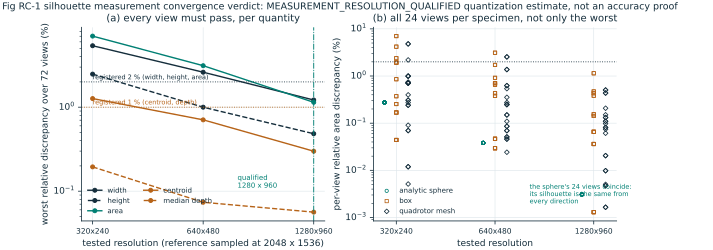
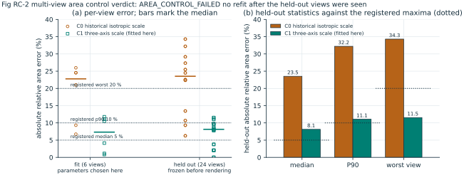
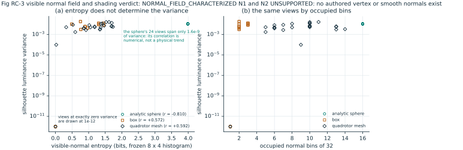
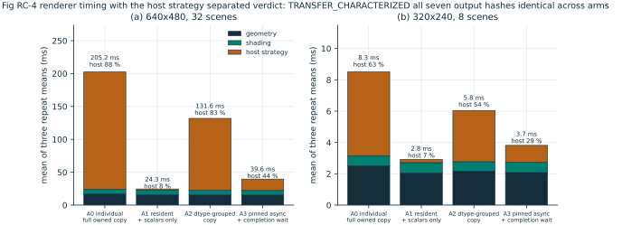

Independent renderer study · figures
Renderer Contract v1
Measurement resolution, area control, normal fields
and the cost of moving pixels to the host
Figures
Five figures, each drawn only from a committed summary.json. The manifest pins the source
result hashes, the generator and every rendered asset, so a figure cannot drift away from its data.
Earlier pinned figures are untouched; these are new files.





Evidence
| Question | Study | Verdict | Boundary |
|---|---|---|---|
| Resolution convergence | R1b | MEASUREMENT_RESOLUTION_QUALIFIED | 1280×960 adopted for this coverage only |
| Multi-view area control | R2b | AREA_CONTROL_FAILED | no control adopted; held-out gates missed |
| Visible normal field | R3b | NORMAL_FIELD_CHARACTERIZED | N1/N2 UNSUPPORTED by the asset |
| Compute versus host strategy | R5b | TRANSFER_CHARACTERIZED | seven output hashes invariant |
| Downstream causal contribution | — | NOT_TESTED | no such experiment exists in this track |
The first characterization lineage remains published and unchanged, negative verdicts included:
RC-R1 GEOMETRY_DEFECT, RC-R2 AREA_MATCH_FAILED, RC-R3
SHADING_GATE_FAILED. These follow-ups do not reinterpret them into passes.
Boundary
Nothing on this page is evidence about a detector, an association module, a policy or the closed D8b frozen-policy result. Area mismatch, shading and mesh geometry are NOT_TESTED as causes of that loss. Lighting and material grids stay frozen at their earlier results, and no new training, detector or policy experiment was opened by this contract.